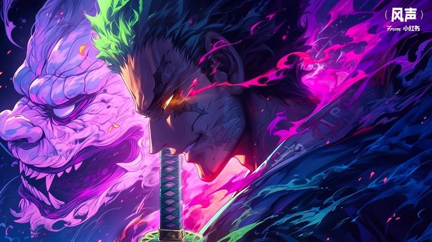

JcDuro
Code & Ideas

Goku
Guerrero Saiyajin que supera sus límites en cada batalla. Representa la fuerza, la perseverancia y el deseo constante de mejorar.
Pikachu
El icónico compañero eléctrico de Ash. Su chispa y carisma lo convierten en el rostro más reconocido del mundo Pokémon.

Todoroki Shoto
Héroe en formación con poderes de fuego y hielo. Lucha por encontrar su propio camino más allá del legado familiar.
Jotaro Kujo
Frío, valiente y con un fuerte sentido de justicia. Usa su Stand, Star Platinum, para enfrentarse a enemigos poderosos.

Roronoa Zoro
Espadachín decidido a ser el mejor del mundo. Su lealtad y disciplina lo convierten en un pilar del equipo de Luffy.

Kyojuro Rengoku
Pilar de la Llama y símbolo de pasión y nobleza. Su energía ardiente y optimismo inspiran a todos los cazadores de demonios.